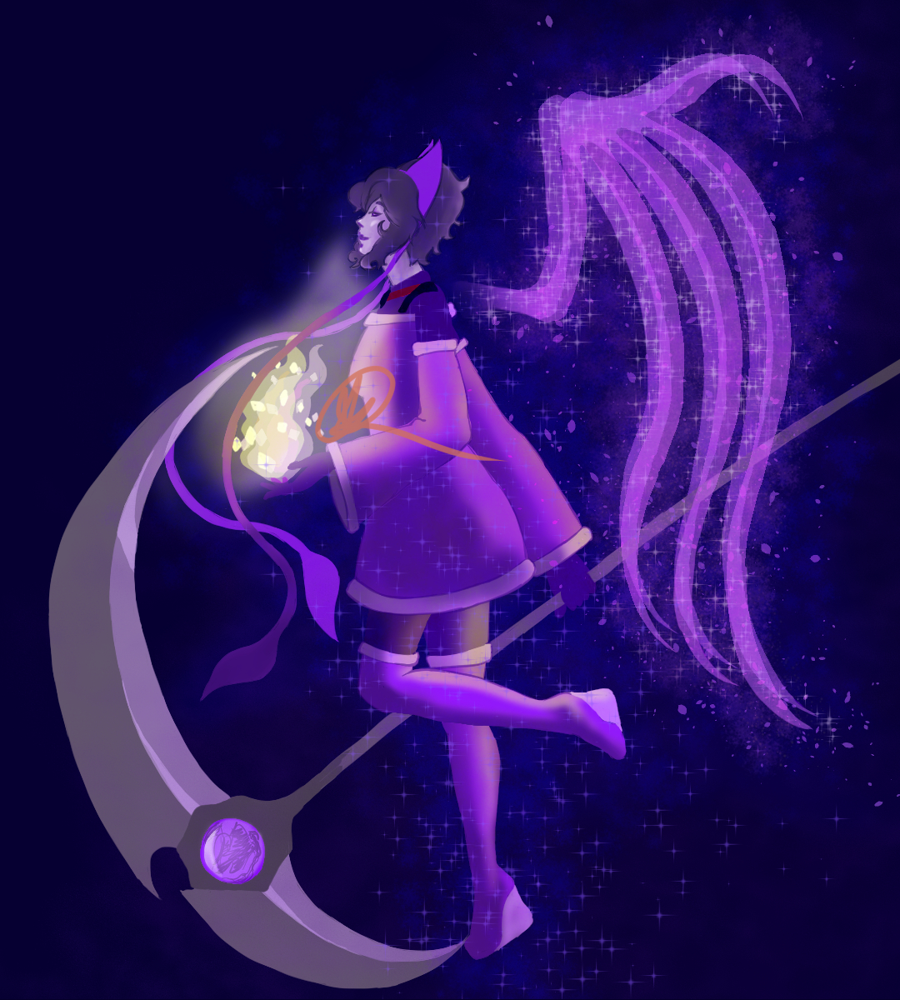

Clip Studio Paint, 2020
This is one of many versions of this character that I have drawn over the years. She is the character that inpired the story I have been drafting since I was in highschool. She started out as a creepy character, but her story develops more and more each time I revisit her.
